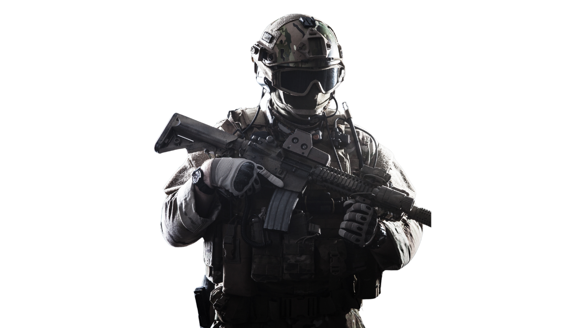

| Los personajes son el alma de los videojuegos, dándoles vida y emoción a cada historia. Son quienes nos permiten sumergirnos en mundos fantásticos, asumir identidades heroicas o villanescas y experimentar aventuras inolvidables. Desde los clásicos protagonistas icónicos hasta los antagonistas más temidos, cada uno deja una huella en nuestra memoria, transmitiendo emociones, valores y experiencias que nos acompañan incluso después de apagar la pantalla. Sin ellos, los videojuegos no serían más que simples escenarios vacíos; son los personajes quienes nos hacen sentir, luchar y soñar en cada partida. 🎮✨ |  |
| Personajes | Descripción | Personajes | Descripción |
|---|---|---|---|
Crane de DyingLight |
Originalmente Kyle Crane era un mercenario luego fue contratado por el SAI para después ser lanzado a la zona de cuarentena de la ciudad de Harran desde un avión. |
Ellis de Left4Dead2 |
Ellis es un mecánico de 23 años de Savannah, Georgia, es un personaje optimista y alegre. |
Nick de Left4Dead2 |
Nick es un hombre de tez blanca, lleva puesto un traje blanco de 3000 dólares y una camisa color azul eléctrico, también lleva varios anillos en los dedos. |
Coach de Left4Dead2 |
Coach es un hombre afroamericano de 44 años, es un personaje amable y protector. |
Rochelle de Left4Dead2 |
Es una asistente de producción en un canal de televisión, es originaria de Cleveland, Ohio. |
Scarlet Witch de MarvelRivals |
Scarlet Witch es una duelista en Marvel Rivals, lo que significa que su objetivo principal es infligir daño y eliminar tantos enemigos como sea posible del equipo enemigo. |